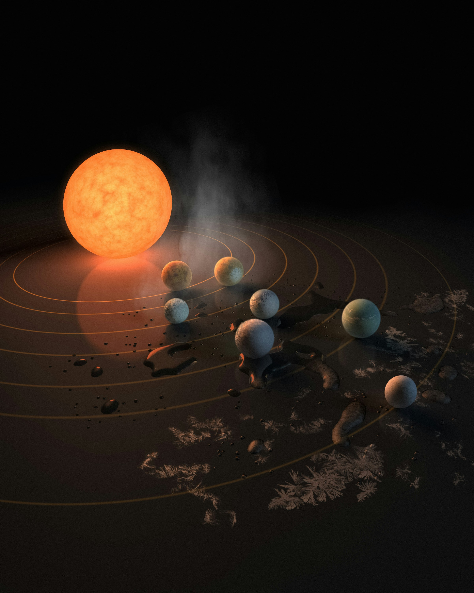
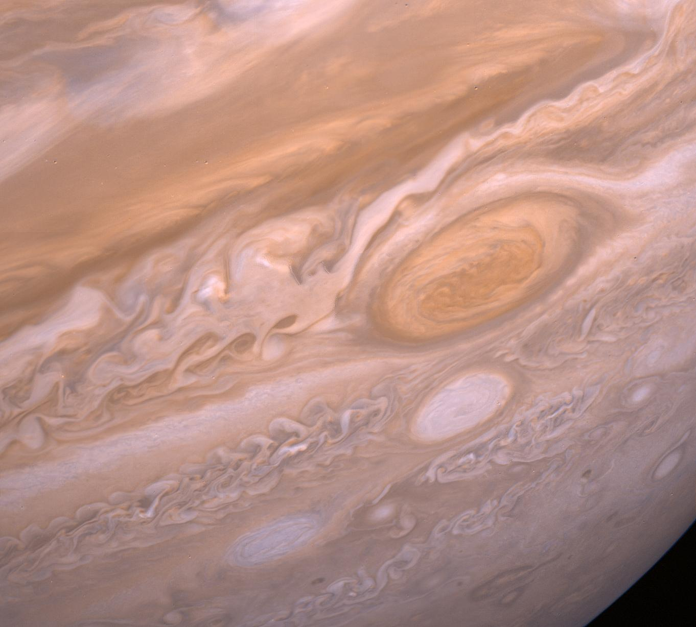
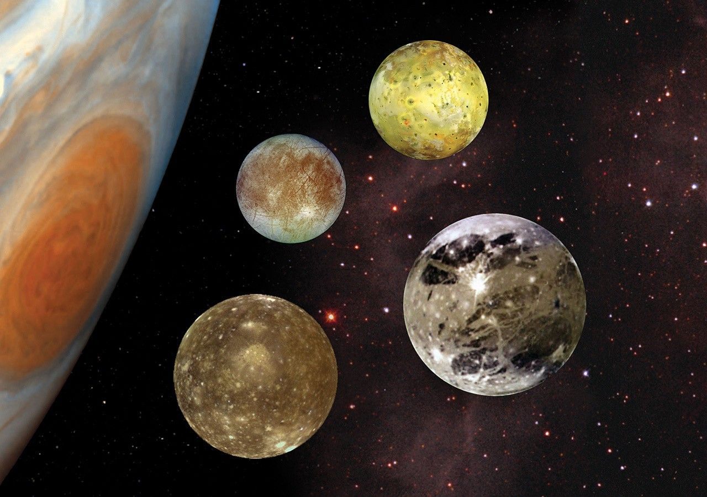

Ganymedes

Foto: Galileo (Sonde)
Solsystemets og Jupiters største måne. Den er større enn planeten Merkur med hele 8% bredere diameter, men massen er kun 45 % av Merkurs.
Jupiter er den femte planeten fra solen og den største planeten i solsystemet. Den er over dobbelt så massiv som alle de andre planetene til sammen, og er 318 ganger større enn jorden. Planeten er veldig lik en stjerne, men den ble aldri stor nok til å begynne å brenne.
Her er en visning av 6 av jupiters største måner, fra størst til minst. De fire første er navngitt "de galileiske månene" av oppdageren Gallileo Gallilei.
Foto: Galileo (Sonde)
Solsystemets og Jupiters største måne. Den er større enn planeten Merkur med hele 8% bredere diameter, men massen er kun 45 % av Merkurs.

Foto: Galileo (Sonde)
Den nest største, tungt kratersatt og svært gammel overflate. Den er nesten like stor som Merkur, men er ca. 33% av massen til planeten Merkur.

Foto: Galileo (Sonde)
Den tredje største, kjent for ekstrem vulkansk aktivitet. Io er 3 642 km i diameter, som da tilsvarer ca 75% av Merkur sin størrelse i diameter.

Foto: Galileo (Sonde)
Den fjerde største, dekket av is med et flytende hav under. Europa har en diameter på ca. 3 121 kilometer, altså om lag 64 % av Merkurs størrelse i diameter.

Foto: Voyager 1 (Sonde)
Den femte største, en liten, uregelmessig formet og svært rød innre måne. Diameteren er ca. 167 km, Amaltheas gjennomsnittlige diameter utgjør omtrent 3,4 % av Merkurs diameter.

Foto: Cassini (Sonde)
Den største av Jupiters ytre, uregelmessige måner. Diameteren er på omtrent 140 kilometer, Merkur er ca 35 ganger større i diameter, altså 2,9 % av Merkurs diameter.
De første detaljerte observasjonene av Jupiter ble gjort av Galileo Galilei i 1610 med et lite, hjemmelaget teleskop.
I den senere tid har denne planeten blitt studert av romfartøyer, sonder og romfartøy som passerer forbi på vei til andre verdener. NASAs Juno-romfartøy studerer for tiden kjempeplaneten fra bane. Europa Clipper ble skutt opp 14. oktober 2024 for å studere Jupiters iskalde måne, Europa.
This is the original Voyager "Blue Movie" (so named because it was built from Blue filter images). It records the approach of Voyager 1 during a period of over 60 Jupiter days. Notice the difference in speed and direction of the various zones of the atmosphere. The interaction of the atmospheric clouds and storms shows how dynamic the Jovian atmosphere is. Image Credit: NASA/JPL-Caltech
Five years after leaving Earth to make the 1.7 billion-mile journey (2.8 billion kilometers), the Juno spacecraft entered orbit around Jupiter on July 4, 2016. Through an intricate and critical series of procedures — which could have doomed the mission, but the spacecraft performed almost flawlessly — Juno maneuvered into the grasp of the King of Planets, ready to unlock its secrets. The orbiter has been capturing breakthrough science and breathtaking images ever since.
Read more from 'Juno Enters Orbit Around Jupiter'


Visste du at planeten Jupiter er oppkalt etter den Romerske gudekongen Jupiter, gud for himmel, lys og torden? Dette er spesielt passende da det er den største planeten i solsystemet vårt, og den da guder over de andre.
Jupiter er ikke den eneste guden i familitreet en planet er navgitt fra! Andre eksempler inkluderer hans far, Saturn, brødre Pluto og Neptun, og sønn, Mars!
Guden Jupiter var kjent som menneskehetens og statens store beskytter. Planeten Jupiter fungerer som et kosmisk skjold for jorden. På grunn av sin enorme tyngdekraft trekker den til seg, eller svinger unna, farlige asteroider og kometer som ellers kunne ha truffet oss.
Guden bar en hvit toga og var assosiert med fargen hvit og lys. Planeten er det fjerde lyseste objektet på himmelen (etter solen, månen og Venus) og skinner med et stabilt, klart, hvitt lys som dominerer nattehimmelen.
Guden Jupiter var mest kjent som tordenguden som kastet lyn (hans fremste våpen). Planeten Jupiter er preget av de mest voldsomme stormene i solsystemet, med konstante, gigantiske elektriske lynglimt i atmosfæren som er tusen ganger kraftigere enn lyn på jorden.


